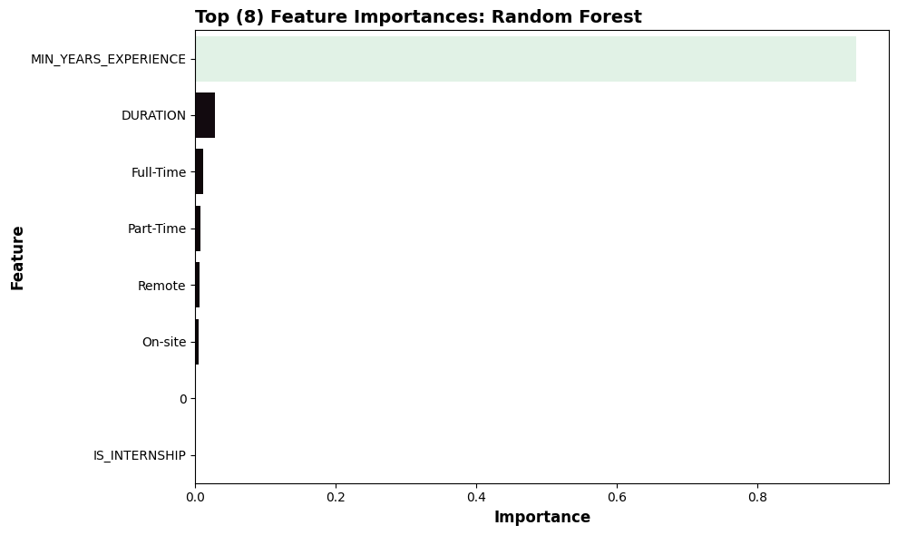
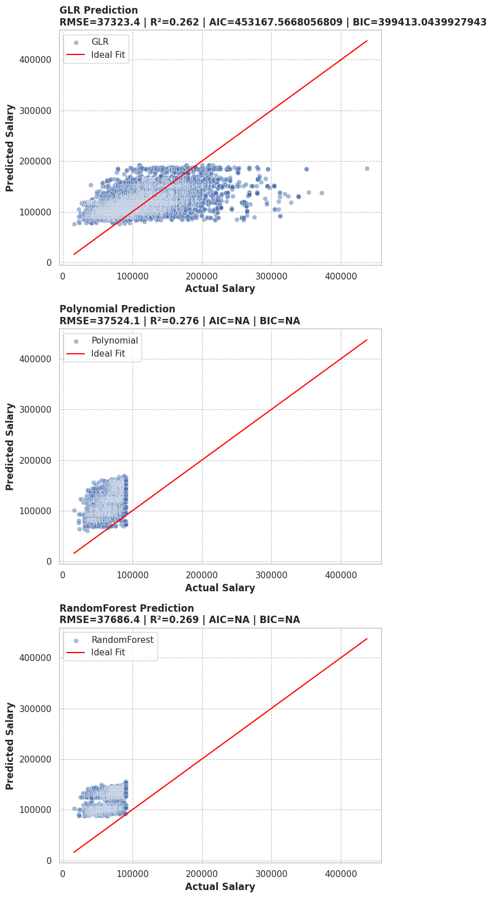

WARNING: Using incubator modules: jdk.incubator.vector
Using Spark's default log4j profile: org/apache/spark/log4j2-defaults.properties
Setting default log level to "WARN".
To adjust logging level use sc.setLogLevel(newLevel). For SparkR, use setLogLevel(newLevel).
25/10/09 01:29:58 WARN NativeCodeLoader: Unable to load native-hadoop library for your platform... using builtin-java classes where applicable
Assignment 04
1 Github Repository:
https://github.com/met-ad-688/assignment-04-dakotalder
2 Feature Engineering
In the following code, I selected only the columns that I wanted to use for my regression models. I then grouped the remote type name column into 3 categories, the Employment type name column into 3 categories, and replaced all Null values in the Duration column with the median of that column. This left me with over 22,000 rows of clean data (after removing Null values in the Target column ‘SALARY’).
[Stage 103:> (0 + 1) / 1]+------+--------+--------------------+--------------------+----------------+-------------+
|SALARY|DURATION|MIN_YEARS_EXPERIENCE|EMPLOYMENT_TYPE_NAME|REMOTE_TYPE_NAME|IS_INTERNSHIP|
+------+--------+--------------------+--------------------+----------------+-------------+
|NULL |6.0 |2 |Full-Time |On-site |false |
|NULL |18.0 |3 |Full-Time |Remote |false |
|NULL |35.0 |5 |Full-Time |On-site |false |
|NULL |48.0 |3 |Full-Time |On-site |false |
|92500 |15.0 |NULL |Flexible |On-site |false |
+------+--------+--------------------+--------------------+----------------+-------------+
only showing top 5 rows +------+--------------------+--------------------+----------------+--------+-------------+
|SALARY|MIN_YEARS_EXPERIENCE|EMPLOYMENT_TYPE_NAME|REMOTE_TYPE_NAME|DURATION|IS_INTERNSHIP|
+------+--------------------+--------------------+----------------+--------+-------------+
|92962 |2 |Full-Time |On-site |18.0 |0 |
|107645|10 |Full-Time |On-site |18.0 |0 |
|192800|6 |Full-Time |On-site |55.0 |0 |
|125900|12 |Full-Time |On-site |18.0 |0 |
|170000|6 |Full-Time |On-site |18.0 |0 |
+------+--------------------+--------------------+----------------+--------+-------------+
only showing top 5 rows +------+-----------------------------------+-----------------------------------------+
|SALARY|features |poly_features |
+------+-----------------------------------+-----------------------------------------+
|92962 |[2.0,18.0,0.0,1.0,0.0,1.0,0.0,1.0] |[2.0,4.0,18.0,0.0,1.0,0.0,1.0,0.0,1.0] |
|107645|[10.0,18.0,0.0,1.0,0.0,1.0,0.0,1.0]|[10.0,100.0,18.0,0.0,1.0,0.0,1.0,0.0,1.0]|
|192800|[6.0,55.0,0.0,1.0,0.0,1.0,0.0,1.0] |[6.0,36.0,55.0,0.0,1.0,0.0,1.0,0.0,1.0] |
|125900|[12.0,18.0,0.0,1.0,0.0,1.0,0.0,1.0]|[12.0,144.0,18.0,0.0,1.0,0.0,1.0,0.0,1.0]|
|170000|[6.0,18.0,0.0,1.0,0.0,1.0,0.0,1.0] |[6.0,36.0,18.0,0.0,1.0,0.0,1.0,0.0,1.0] |
+------+-----------------------------------+-----------------------------------------+
only showing top 5 rows3 Train-Test Split Justification
I used an 80/20 split on my data, as I had over 22,000 rows of clean data. This allowed me to have a large enough training set to learn the relationships between the variables, but also gave me enough data for evaluation to make sure that my test data was still random and unbiased.
#Creating Train and Test Sets
regression_train_data, regression_test_data = regression_data.randomSplit([0.8, 0.2], seed=42)
#print((regression_data.count(), len(regression_data.columns)))
#print((regression_train_data.count(), len(regression_train_data.columns)))
#print((regression_test_data.count(), len(regression_test_data.columns)))25/10/09 01:30:53 WARN SparkStringUtils: Truncated the string representation of a plan since it was too large. This behavior can be adjusted by setting 'spark.sql.debug.maxToStringFields'.
[Stage 40:> (0 + 1) / 1]Intercept: 93601.3920
Coefficients:
MIN_YEARS_EXPERIENCE: 6634.9052
DURATION: -92.9847
IS_INTERNSHIP: -249.3155
EMPLOYMENT_TYPE_NAME_0: 1197.4797
EMPLOYMENT_TYPE_NAME_1: -5523.5492
EMPLOYMENT_TYPE_NAME_2: -8522.4530
REMOTE_TYPE_NAME_0: -5444.3124
REMOTE_TYPE_NAME_1: 249.3158 4 Explanation of GLR Model
Intercept: Represents the baseline predicted salary when the other features are zero, meaning an onsite, full-time, non-internship job with 0 years of experience.
The coefficients represent the change in the predicted salary for each increase in a feature. For example, every additional year of experience increases the predicted salary by $6,634. Full time jobs have predicted higher salaries, while part-time and internship jobs have lower predicted salaries.
---Regression Model Summary---[Stage 46:> (0 + 1) / 1]Coefficient Standard Errors: ['81.4106', '23.5643', '1381781.9942', '2058.8730', '2616.5750', '1566.2595', '1637.0408', '1381781.9942', '1381784.4002']
T Values: ['81.4993', '-3.9460', '-0.0002', '0.5816', '-2.1110', '-5.4413', '-3.3257', '0.0002', '0.0677']
P Values: ['0.0000', '0.0001', '0.9999', '0.5608', '0.0348', '0.0000', '0.0009', '0.9999', '0.9460'] [Stage 49:> (0 + 1) / 1]Null Deviance: 35794690345776.1094
Residual DF Null: 18965
Deviance: 26420287047212.9453
Residual DF: 18957[Stage 50:> (0 + 1) / 1]AIC: 453167.5668 Length of feature names: 9
Length of coefficients: 9
Length of standard errors: 9
Length of t-values: 9
Length of p-values: 9| Feature | Estimate | Std Error | t-stat | p-Value | |
|---|---|---|---|---|---|
| 0 | Intercept | 93601.3920 | 81.4106 | 81.4993 | 0.0000 |
| 1 | MIN_YEARS_EXPERIENCE | 6634.9052 | 23.5643 | -3.9460 | 0.0001 |
| 2 | DURATION | -92.9847 | 1381781.9942 | -0.0002 | 0.9999 |
| 3 | IS_INTERNSHIP | -249.3155 | 2058.8730 | 0.5816 | 0.5608 |
| 4 | EMPLOYMENT_TYPE_NAME_vec_Full-Time | 1197.4797 | 2616.5750 | -2.1110 | 0.0348 |
| 5 | EMPLOYMENT_TYPE_NAME_vec_Part-Time | -5523.5492 | 1566.2595 | -5.4413 | 0.0000 |
| 6 | REMOTE_TYPE_NAME_vec_On-site | -8522.4530 | 1637.0408 | -3.3257 | 0.0009 |
| 7 | REMOTE_TYPE_NAME_vec_Remote | -5444.3124 | 1381781.9942 | 0.0002 | 0.9999 |
| 8 | IS_INTERNSHIP_vec_0 | 249.3158 | 1381784.4002 | 0.0677 | 0.9460 |
+------+-----------------------------------------+
|SALARY|new_poly_features |
+------+-----------------------------------------+
|92962 |[2.0,4.0,18.0,0.0,1.0,0.0,1.0,0.0,1.0] |
|107645|[10.0,100.0,18.0,0.0,1.0,0.0,1.0,0.0,1.0]|
|192800|[6.0,36.0,55.0,0.0,1.0,0.0,1.0,0.0,1.0] |
|125900|[12.0,144.0,18.0,0.0,1.0,0.0,1.0,0.0,1.0]|
|170000|[6.0,36.0,18.0,0.0,1.0,0.0,1.0,0.0,1.0] |
+------+-----------------------------------------+
only showing top 5 rows [Stage 65:> (0 + 1) / 1]Intercept: 82664.5758
Coefficients:
MIN_YEARS_EXPERIENCE: 12841.9186
MIN_YEARS_EXPERIENCE_SQ: -458.5495
DURATION: -90.7714
IS_INTERNSHIP: 2021.1601
EMPLOYMENT_TYPE_NAME_0: -1126.1755
EMPLOYMENT_TYPE_NAME_1: -6690.5657
EMPLOYMENT_TYPE_NAME_2: -8295.2198
REMOTE_TYPE_NAME_0: -5060.6739
REMOTE_TYPE_NAME_1: -2021.1598 5 Polynomial Regression Explanation
The polynomial regression adds a little twist. When I squared the Min Years Experience feature, it seems to show that the more years of experience required for a job, the higher the salary, but the rate of increase in salary gets smaller. This is shown by the positive coefficient for Min Years Experience and the negative coefficient for Min Years Experience Squared.
---Polynomial Regression Model Summary--- Coefficient Standard Errors: ['292.1367', '20.7488', '23.2672', '1364347.4552', '2035.6125', '2584.1001', '1546.5315', '1616.4788', '1364347.4552', '1364349.9168']
T Values: ['43.9586', '-22.1000', '-3.9013', '0.0015', '-0.5532', '-2.5891', '-5.3638', '-3.1307', '-0.0015', '0.0606']
P Values: ['0.0000', '0.0000', '0.0001', '0.9988', '0.5801', '0.0096', '0.0000', '0.0017', '0.9988', '0.9517'] Null Deviance: 35794690345776.1094
Residual DF Null: 18965
Deviance: 25756421776048.0586
Residual DF: 18956[Stage 75:> (0 + 1) / 1]AIC: 452686.9167 Length of feature names: 10
Length of coefficients: 10
Length of standard errors: 10
Length of t-values: 10
Length of p-values: 10| Feature | Estimate | Std Error | t-stat | p-Value | |
|---|---|---|---|---|---|
| 0 | Intercept | 82664.5758 | 292.1367 | 43.9586 | 0.0000 |
| 1 | MIN_YEARS_EXPERIENCE | 12841.9186 | 20.7488 | -22.1000 | 0.0000 |
| 2 | MIN_YEARS_EXPERIENCE_SQ | -458.5495 | 23.2672 | -3.9013 | 0.0001 |
| 3 | DURATION | -90.7714 | 1364347.4552 | 0.0015 | 0.9988 |
| 4 | IS_INTERNSHIP | 2021.1601 | 2035.6125 | -0.5532 | 0.5801 |
| 5 | EMPLOYMENT_TYPE_NAME_vec_Full-Time | -1126.1755 | 2584.1001 | -2.5891 | 0.0096 |
| 6 | EMPLOYMENT_TYPE_NAME_vec_Part-Time | -6690.5657 | 1546.5315 | -5.3638 | 0.0000 |
| 7 | REMOTE_TYPE_NAME_vec_On-site | -8295.2198 | 1616.4788 | -3.1307 | 0.0017 |
| 8 | REMOTE_TYPE_NAME_vec_Remote | -5060.6739 | 1364347.4552 | -0.0015 | 0.9988 |
| 9 | IS_INTERNSHIP_vec_0 | -2021.1598 | 1364349.9168 | 0.0606 | 0.9517 |
Length of feature names: 8
Length of importances: 8def clean_feature_name(feature_list):
clean_names = []
for name in feature_list:
if isinstance(name, list):
clean_names.append(", ".join(str(n) for n in name))
elif isinstance(name, str) and name.startswith("["):
clean_names.append(name.replace("[","").replace("]", "").replace("'", "").replace("'",'').strip())
else:
clean_names.append(str(name))
return clean_names
importance_df = pd.DataFrame({
"Feature": feature_names,
"Importance": importances
}).sort_values(by="Importance", ascending=False)
importance_df["Feature"] = clean_feature_name(importance_df["Feature"])
plt.figure(figsize=(10, 6))
sns.barplot(data=importance_df, x="Importance", y="Feature", hue="Importance", palette="mako", legend=False)
plt.title("Top (8) Feature Importances: Random Forest", fontsize=14, fontweight='bold', loc='left')
plt.xlabel("Importance", fontsize=12, fontweight='bold')
plt.ylabel("Feature", fontsize=12, fontweight='bold')
plt.tight_layout()
plt.savefig("output/rf_feature_importance.png", dpi=300)
plt.show()
6 Feature Importance Summary
This analysis shows that the Minimum Years Experience is by far the most important feature in predicting salary, with a feature importance score of above .8. After that, there aren’t any features that have a significant impact in my model, though I believe if I had added different categorical features it would have been more interesting.
| SALARY | Model | Predicted | |
|---|---|---|---|
| 0 | 15860.0 | GLR | 76364.272870 |
| 1 | 22440.0 | GLR | 104756.726135 |
| 2 | 22880.0 | GLR | 82069.331370 |
| 3 | 23179.0 | GLR | 90743.038366 |
| 4 | 23585.0 | GLR | 78595.904958 |
